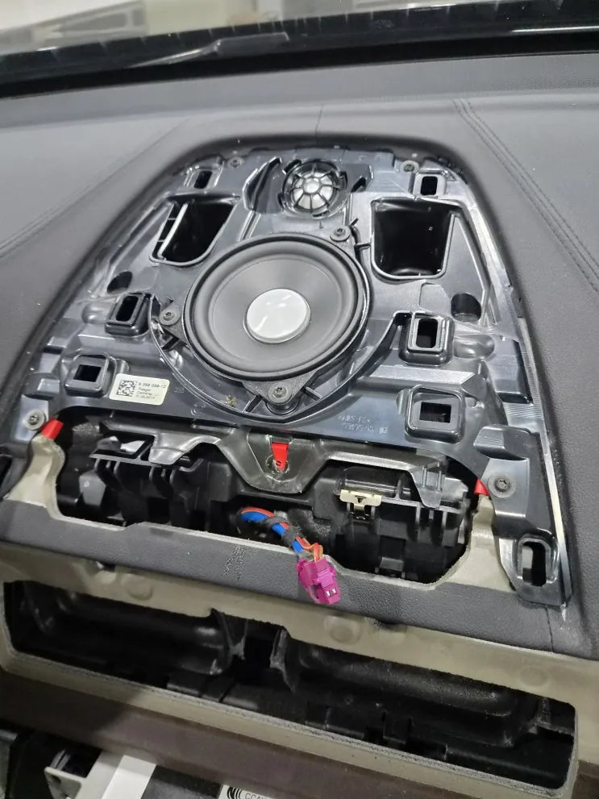
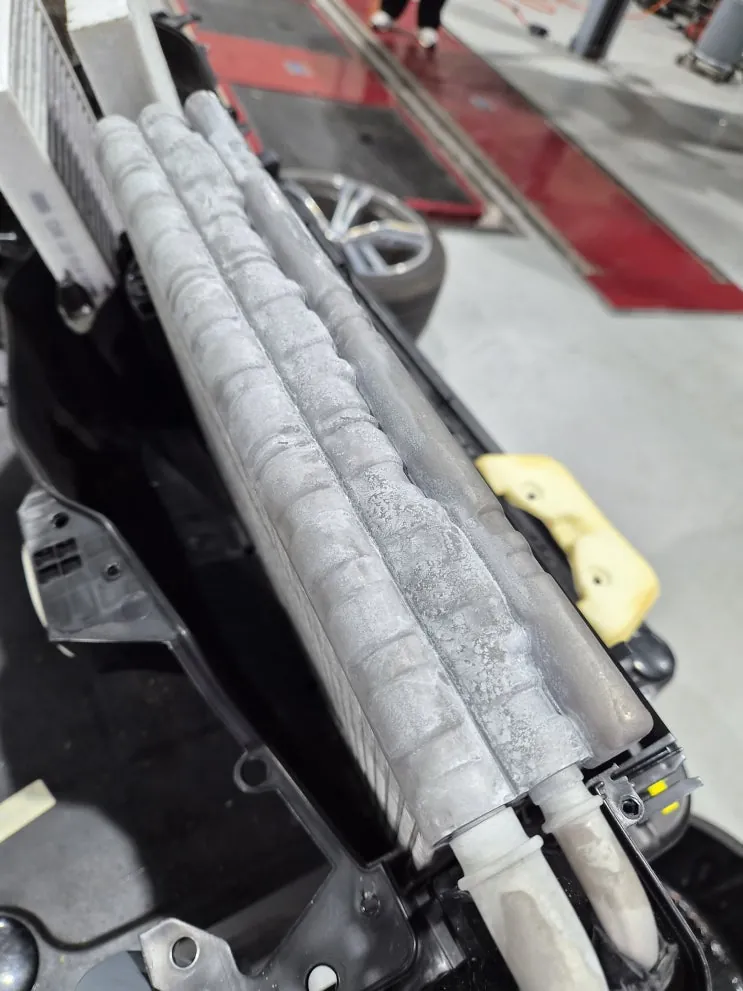
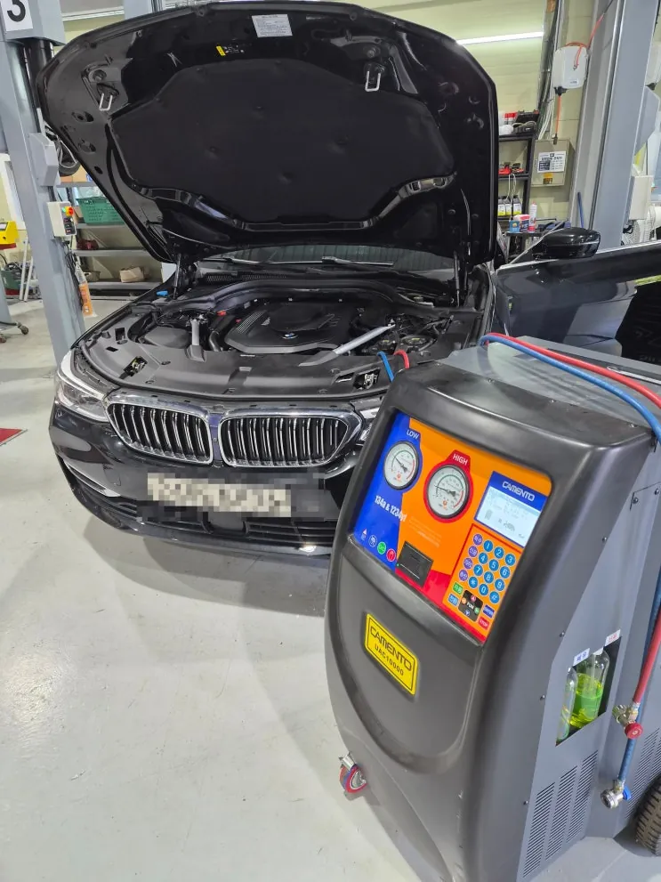
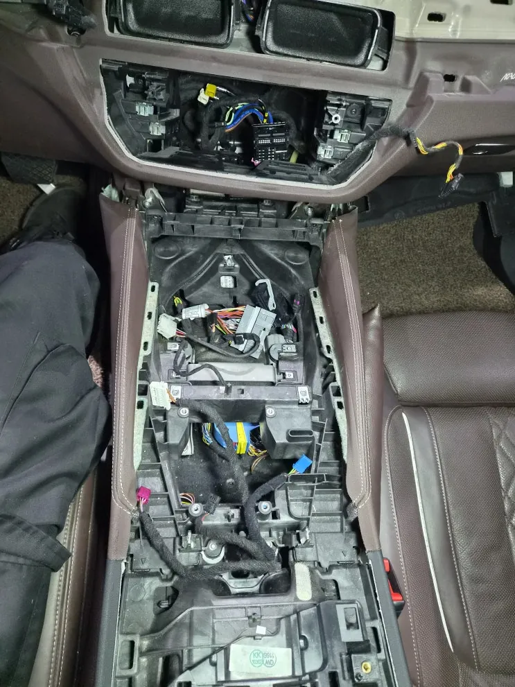
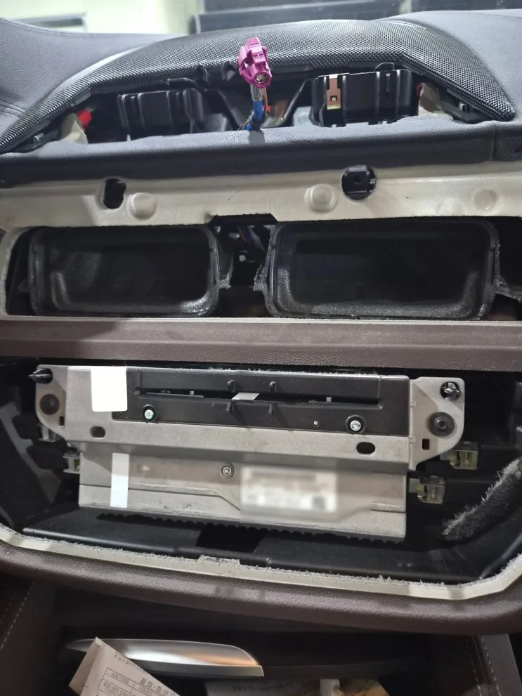
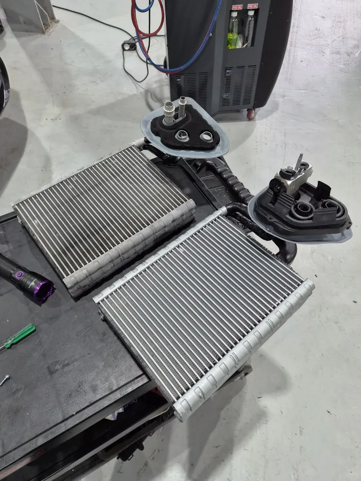
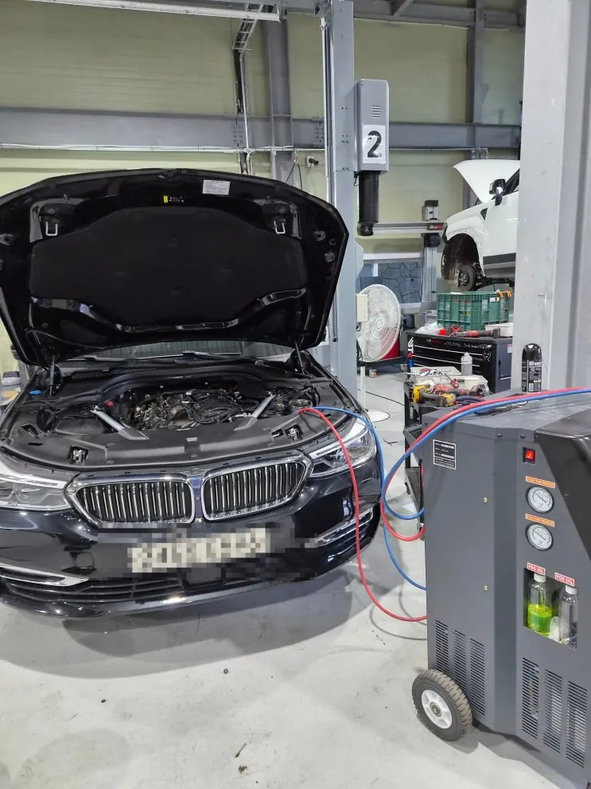

BMW 640i 에어컨 바람 약함, 에바포레이터 누설 교환
한눈에 보기
BMW 640i 에어컨 냉방 약화는 대시보드 안 에바포레이터의 냉매 누설이 원인이었고, 중고차 성능보증보험 승인을 받은 뒤 에바포레이터와 배관 오링을 새것으로 바꾸고 진공·냉매 충전까지 마쳤습니다. 성능보증보험은 수리 전에 보험사 접수가 먼저입니다.
- 차량
- BMW 640i
- 증상
- 에어컨 찬바람 약함
- 냉매 누설
- 작업
- 냉매 압력 점검
- 누설 테스트
- 성능보증보험 접수
- 냉매 회수
- 에바포레이터 교환
- 배관 오링 교환
- 진공 작업
- 냉매·오일 충전
- 작업장
- 그릿서비스 · 경기도 파주시 교하로 1312-53, 1동 1층

입고 증상
중고차로 구입하신 BMW 640i가 "에어컨을 켜도 바람이 시원하지 않다"는 증상으로 입고됐습니다.
에어컨 냉방이 약해지는 원인은 한 가지가 아닙니다. 냉매가 모자랄 수도 있고, 컴프레서나 콘덴서, 배관 어딘가에서 문제가 생겼을 수도 있습니다. 원인을 확인하지 않고 부품부터 바꾸면 수리비만 늘어날 수 있어, 교환 이야기를 꺼내기 전에 진단부터 했습니다.


점검·진단
냉매 압력을 측정하고 누설 테스트를 진행한 결과, 엔진룸 쪽이 아니라 실내 쪽 에바포레이터에서 냉매가 새는 것을 확인했습니다.
에바포레이터는 대시보드 깊숙한 곳에 있는 열교환기입니다. 차가워진 냉매가 이 안을 지나가면서 실내로 들어오는 공기의 열을 빼앗아 시원한 바람을 만듭니다. 이 부품에서 냉매가 새면 냉매를 다시 채워도 시간이 지나면 또 빠져나가, 냉방이 약해지는 일이 되풀이됩니다.
일반적으로 냉매를 충전한 뒤 얼마 지나지 않아 다시 바람이 미지근해지거나, 송풍구에서 쉰내·약품 냄새가 나거나, 조수석 발밑이 축축해지는데 엔진룸 배관에는 새는 흔적이 없다면 에바포레이터 누설을 의심해 볼 수 있습니다.

성능보증보험 접수
이 차량은 중고차 성능·상태점검 책임보험(성능보증보험)으로 수리했습니다. 매매 때 받은 성능·상태점검기록부에 없던 결함이 보장 기간 안에 확인되면 수리비를 보험으로 처리할 수 있는 제도입니다. 보장 기간과 범위는 계약 조건마다 다릅니다.
진행 순서는 다음과 같았습니다. 그릿서비스에서 누설 진단 결과와 사진, 점검 자료를 정리했고, 수리에 들어가기 전에 보험사에 접수했습니다. 보험사 확인 절차를 거쳐 수리 승인이 난 뒤 교환 작업을 시작했습니다.
보험사 접수 전에 먼저 수리해 버리면 보상을 받기 어려울 수 있습니다. 매매 계약서와 성능·상태점검기록부를 미리 준비해 두면 접수가 수월합니다.


에바포레이터 교환 작업
먼저 회수 장비로 에어컨 계통에 남아 있던 냉매를 빼냈습니다. 에바포레이터는 대시보드 안쪽에 있어서 실내 내장재와 주변 부품을 차례로 떼어 내야 손이 닿습니다. 배선과 커넥터, 고정 클립이 상하지 않도록 분리하는 부품마다 표시를 해 두었습니다.
새는 에바포레이터를 떼어 내고 새 부품을 달았습니다. 배관이 이어지는 부분의 오링(고무 밀봉링)도 함께 새것으로 바꿔 연결부에서 다시 새지 않도록 했습니다.
조립은 분해의 역순으로 했고, 진공 작업으로 계통 안의 공기와 수분을 뽑아낸 뒤 진공 상태를 한동안 유지하며 다른 곳에서 새는 곳이 없는지 다시 확인했습니다.

출고 점검·관리 안내
규정량에 맞춰 냉매와 오일을 채우고, 송풍구에서 나오는 바람 온도와 에어컨 작동 상태를 점검했습니다. 떼어 냈던 내장재의 단차와 주행 중 잡소리까지 확인한 뒤 출고했습니다.
에바포레이터는 늘 실내 습기와 먼지를 맞는 부품입니다. 목적지에 닿기 몇 분 전에 A/C 버튼을 끄고 송풍만 돌려 두면 내부가 말라 냄새와 부식을 줄이는 데 도움이 됩니다. 에어컨 필터를 주기적으로 바꾸는 것도 에바포레이터 오염을 줄이는 방법입니다.

자주 묻는 질문
중고차 성능보증보험으로 에어컨 고장도 수리할 수 있나요?
성능·상태점검기록부와 다른 결함이 보장 기간 안에 확인되면 보험 처리가 가능할 수 있습니다. 적용 여부는 계약 조건과 보험사 확인에 따라 달라지며, 수리 전에 보험사 접수를 먼저 해야 합니다.
에바포레이터 누설은 어떤 증상으로 알 수 있나요?
냉매를 채워도 다시 냉방이 약해지는 일이 반복되거나, 송풍구 냄새, 조수석 발밑 습기가 있는데 엔진룸 쪽에는 누설 흔적이 없다면 의심해 볼 수 있습니다. 정확한 판단은 압력 점검과 누설 테스트로 합니다.
640i, 비슷한 증상이라면 사진부터 보내 주세요
파주·운정·교하·금촌 어디서든 전화나 카톡으로 상태를 먼저 알려 주시면 확인 후 안내해 드립니다. 카톡에는 손상 부위가 보이게 찍은 사진을 함께 보내 주세요.
그릿서비스 · 경기도 파주시 교하로 1312-53, 1동 1층 · 네이버 지도
이 작업의 원문 기록: 네이버 블로그에서 보기